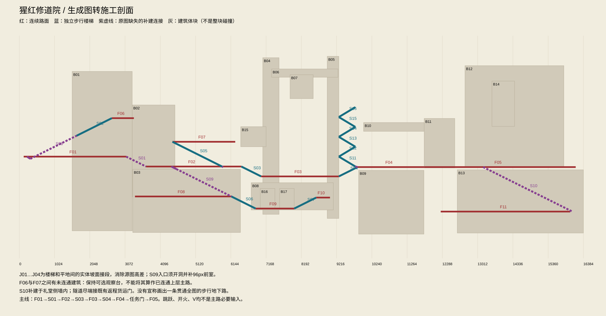

01 / imagegen生成图

源码已按图施工，尚未发布。下方为最初提取图；最新场景导出见 as-built.svg，施工状态与待修问题见 HANDOFF.md。
施工规则与转换边界
| ID | 对象 | 类型 | 起点 | 终点 | 角度 | 补建 |
|---|---|---|---|---|---|---|
| F01 | 站前街道 | floor | [128, 1120] | [3104, 1120] | ||
| F02 | 装卸庭主地面 | floor | [3680, 1408] | [6448, 1408] | ||
| F03 | 钟庭地面 | floor | [7024, 1696] | [9280, 1696] | ||
| F04 | 花园地面 | floor | [9824, 1424] | [11760, 1424] | ||
| F05 | 礼堂地面 | floor | [11760, 1424] | [16160, 1424] | ||
| F06 | 门楼阳台 | floor | [2688, 0] | [3328, 0] | ||
| F07 | 侧楼廊台 | floor | [4448, 688] | [6272, 688] | ||
| F08 | 货道地面 | floor | [3360, 2280] | [6160, 2280] | ||
| F09 | 泵房地面 | floor | [6864, 2632] | [7984, 2632] | ||
| F10 | 泵房东检修台 | floor | [8624, 2312] | [9024, 2312] | ||
| F11 | 礼堂后隧道 | floor | [12240, 2720] | [16000, 2720] | ||
| S01 | 补建门楼至装卸庭 | stair | [3104, 1120] | [3680, 1408] | 26.57 | True |
| S02 | 门楼阳台梯 | stair | [1664, 512] | [2688, 0] | 26.57 | False |
| S03 | 装卸庭至钟庭 | stair | [6448, 1408] | [7024, 1696] | 26.57 | False |
| S04 | 钟庭至花园 | stair | [9280, 1696] | [9824, 1424] | 26.57 | False |
| S05 | 侧楼长梯 | stair | [4448, 688] | [5920, 1424] | 26.57 | False |
| S06 | 货道至泵房 | stair | [6160, 2280] | [6864, 2632] | 26.57 | False |
| S07 | 泵房东梯 | stair | [7984, 2632] | [8624, 2312] | 26.57 | False |
| S08 | 补建门楼低梯 | stair | [320, 1184] | [1664, 512] | 26.57 | True |
| S09 | 补建货道入口梯 | stair | [4560, 1480] | [6160, 2280] | 26.57 | True |
| S10 | 补建礼堂后隧道梯 | stair | [13472, 1424] | [16064, 2720] | 26.57 | True |
| S11 | 钟楼侧梯 | stair | [9760, 1408] | [9280, 1120] | 30.96 | False |
| S12 | 钟楼侧梯 | stair | [9280, 1120] | [9760, 832] | 30.96 | False |
| S13 | 钟楼侧梯 | stair | [9760, 832] | [9280, 544] | 30.96 | False |
| S14 | 钟楼侧梯 | stair | [9280, 544] | [9760, 256] | 30.96 | False |
| S15 | 钟楼侧梯 | stair | [9760, 256] | [9280, -32] | 30.96 | False |
| S16 | 钟楼侧梯 | stair | [9280, -32] | [9760, -320] | 30.96 | False |
| J01 | 门楼低梯接街道 | ramp_join | [224, 1120] | [320, 1184] | ||
| J02 | 货道梯入口接庭院 | ramp_join | [4416, 1408] | [4560, 1480] | ||
| J03 | 侧楼梯脚接庭院 | ramp_join | [5888, 1408] | [5920, 1424] | ||
| J04 | 钟楼梯脚接花园 | ramp_join | [9760, 1408] | [9824, 1424] | ||
| B01 | 门楼石墙 | 3D | ||||
| B02 | 吊车房后墙 | 3D | ||||
| B03 | 装卸庭基础 | 3D | ||||
| B04 | 钟楼西墩 | 3D | ||||
| B05 | 钟楼东墩 | 3D | ||||
| B06 | 钟架梁 | 3D | ||||
| B07 | 铜钟 | 3D | ||||
| B08 | 泵房后墙 | 3D | ||||
| B09 | 花园基础 | 3D | ||||
| B10 | 花园棚 | 3D | ||||
| B11 | 门框 | 3D | ||||
| B12 | 礼堂后墙 | 3D | ||||
| B13 | 礼堂基础 | 3D | ||||
| B14 | 高窗玻璃 | 2D贴片 | ||||
| B15 | 档案柜 | 3D柜体+2D书脊 | ||||
| B16 | 左泵罐 | 3D | ||||
| B17 | 右泵罐 | 3D |